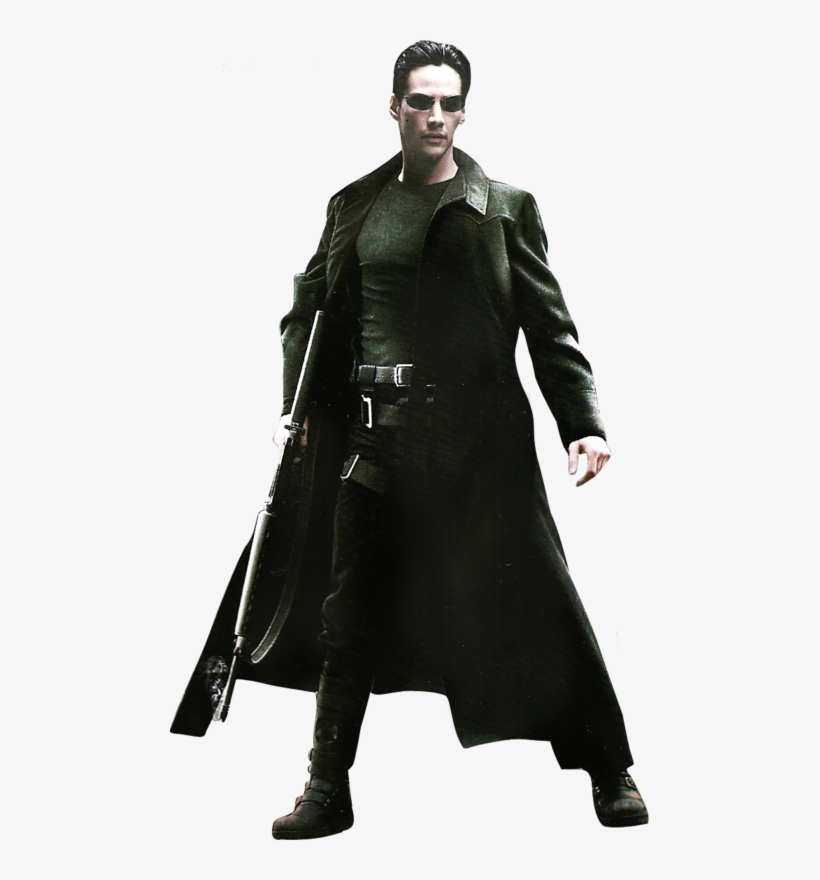

Webpack/babel/npm Config
The turorial I used to make this:
My notes:
- npm init -y
- npm i -d webpack webpack-cli
- change in package.json
- scripts to include "build": "webpack"
- make src folder in rootdir
- make index.js in src folder
- npm run build --> makes a dist folder with main.js in it (transpiled from index.js)
- npm i -d html-webpack-plugin html-loader // allows you to transpile html from src dir
- create webpack.config.js and fill it out (require the plugin, define rules, options, plugins, template
(index.html
- location), filename - new name in dist folder, gets transpiled with js on build)
- npm i -d webpack-dev-server // saves hastle of turning on/off server on change, triggers rebuilds on the fly
- add dev script to package.json "dev": "webpack-dev-server" // opens local live server for testing
- npm i -D babel-loader babel-core babel-preset-env
- add babel-loader to webpack.config.js rules
- npm i -d file-loader // to transpile specified assets, e.g. src/assets/img.jpg -->
dist/2934t2r39fnsidf9a8f.jpg)
- add another rule to webpack.config.js
- npm i -D node-sass style-loader css-loader sass-loader mini-css-extract-plugin // enables use of sass
- import your styles to your index.js - also a good idea to write your js code on other files and import them
to your
- index.js - styles will be compiled with js now.
- add MiniCssExtractPlugin to your webpack.config.js
